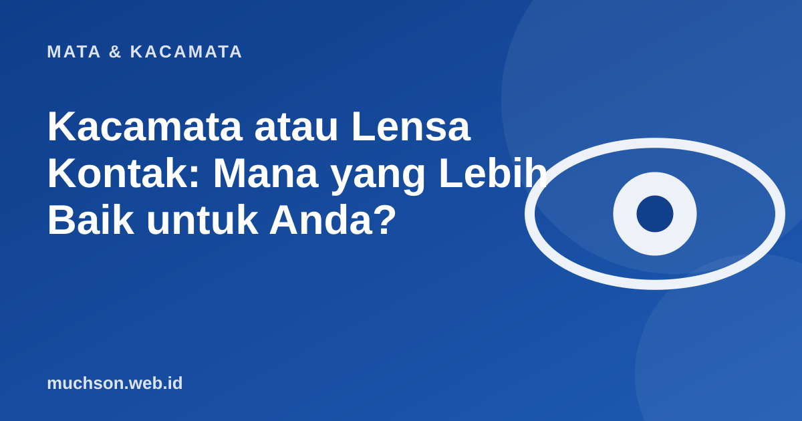

Beranda › Artikel › Mata & Kacamata
Mata & KacamataKacamata atau Lensa Kontak: Mana yang Lebih Baik untuk Anda?
Tidak ada pilihan yang menang untuk semua orang. Kacamata sederhana dan rendah risiko, lensa kontak memberi kebebasan visual tetapi menuntut disiplin kebersihan. Pilihlah sesuai kebiasaan Anda, bukan tren.

Perbandingan langsung
Aturan aman memakai lensa kontak
Jangan abaikan
Mata merah, nyeri, atau sensitif cahaya saat memakai lensa kontak adalah tanda bahaya. Lepas lensa dan segera periksa ke dokter mata. Infeksi kornea bisa serius.
Tanya jawab
Apakah lensa kontak boleh dipakai seharian?
Banyak orang memakainya beberapa jam hingga seharian, tetapi mata perlu istirahat. Ikuti anjuran jenis lensa dan dokter Anda.
Apakah silinder bisa pakai lensa kontak?
Bisa, dengan jenis khusus (toric), terutama untuk silinder tertentu. Perlu pemeriksaan untuk menentukan jenisnya.
Mana yang lebih murah?
Dalam jangka panjang kacamata biasanya lebih murah karena lensa kontak menimbulkan biaya berulang, termasuk larutan.